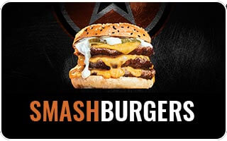
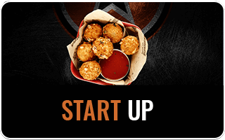
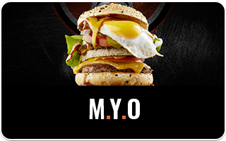
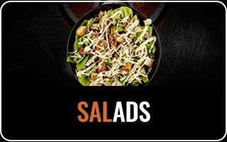
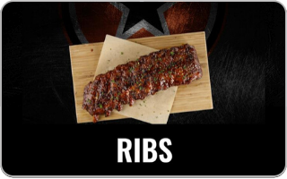
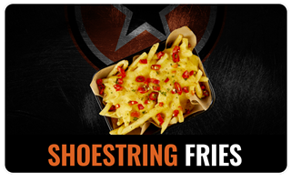
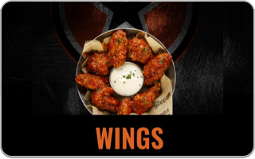

About RocoMamas
Founded in July 2013, RocoMamas has fast become one of the trendiest restaurants in South Africa, garnering a loyal following of burger enthusiasts. Their brand position of “Not Normal” is evident in their funky décor, rock ‘n roll vibe, unique menu items and an open-style kitchen where customers can see (and smell) the meals being prepared. This new concept is a result of the growing appetite for hand-made food and a more personalised dining experience. Customers can sit down and soak up the laid-back vibe with a burger and craft beer, or choose to order a takeaway thanks to the speedy service. RocoMamas has a menu that goes far beyond your typical burger joint; it’s all about customisation. Famous for their artisanal-style “Smashburgers”, the franchise also serves chicken wings and ribs as their core offering. The Smashburger concept originated from the United States and refers to the process of smashing a ball of ground beef on a hot grill to seal in the juices, rather than squeezing them out. This results in a medium to well-done burger that is very juicy. Many customers will testify that once you’ve tasted a Smashburger, there’s no going back to ‘normal’ – something that RocoMamas prides itself on not being. The RocoMamas concept was launched by Brian Altriche, who has grown RocoMamas to more than 65 restaurants throughout the country and 13 international restaurants, located in Australia, Namibia, Kenya, Zimbabwe, Mauritius, the Middle East and recently opened its first outlets in Cyprus and India. Spur Corporation acquired the majority stake in RocoMamas in March 2015, with Altriche continuing as CEO. With growth on the horizon for RocoMamas, Spur Corporation looks forward to keeping the brand true to its core values and distinctiveness that customers unquestionably love. A combination of unique menu items, a trendy dining atmosphere and a bill that won’t break the bank, makes RocoMamas a winning recipe for success in South Africa.
Specials:
PRICES VALID 21 JUNE - 11 JULY 2021

Menu:
      Contact us:
📍 139 Helen Joseph Rd, Glenwood, Berea, 4001📍
📞 031 942 2992 📞
✉️ incredible@jdg.co.za ✉️
Trading hours:
Mon-Fri: 11am - 8pm
Saturday: 11am - 8pm
Sunday: 11am - 8pm
Public Holidays: 11am - 8pm
Please visit for more info